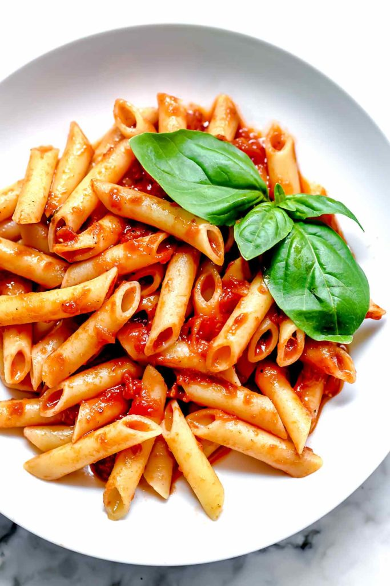

Marinara

Description
With just 5 ingredients, this easy marinara turns out light and bright and is supremely easy to make from scratch.
Ingredients
- kosher salt
- 1 28-ounce can whole peeled San Marzano tomatoes , with purée
- ¼ cup extra-virgin olive oil
- 4 garlic cloves , peeled and smashed
- 1 tablespoon tomato paste
- 1 teaspoon kosher salt
- ½ teaspoon freshly ground black pepper
- 2 sprigs fresh basil or oregano , plus more basil for garnish
- 1 pound dried penne pasta , or other favorite pasta of your choice
Steps
- Bring a large pot of water to a boil and season generously with kosher salt.
- Meanwhile, begin preparing the marinara. Pour the tomatoes and purée into a bowl and crush with your hands or the the back of a spoon, then set aside.
- In a large cold skillet, add the extra-virgin olive oil and garlic cloves, and bring to medium heat. As the garlic begins to sizzle, stir occasionally, and cook until fragrant and golden, about 5 minutes. Monitor the heat so the garlic doesn't cook too quickly or burn.
- Very carefully stir the tomato paste into the garlic and oil—take care so the oil doesn't splatter and burn you as the paste is added—and cook for 1-2 minutes. Carefully spoon the tomatoes into the pan with the oil and paste and season with salt and pepper. Add the basil sprigs and bring to a boil. Reduce to a bubbling simmer over low heat, stirring occasionally, for 30 minutes. Stir to mix the oil that rises to the top, then discard the basil sprigs and garlic.
- Meanwhile, cook the pasta in the boiling water until 2 minutes shy of suggested cooking time on the packaging. Use a slotted spoon or spider to transfer the pasta directly to the sauce to continue cooking until tender but still toothy. Toss the pasta to coat it well, and add 1-2 tablespoons of the pasta water if needed to extend the sauce. Garnish with fresh basil and serve.
Back to main page